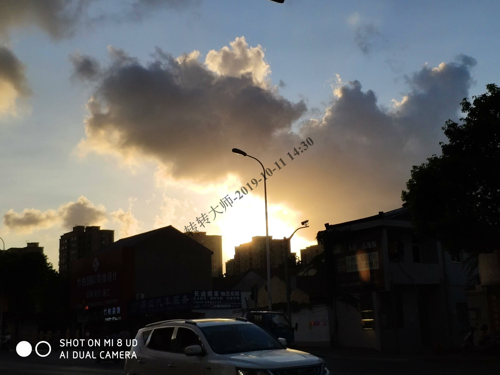
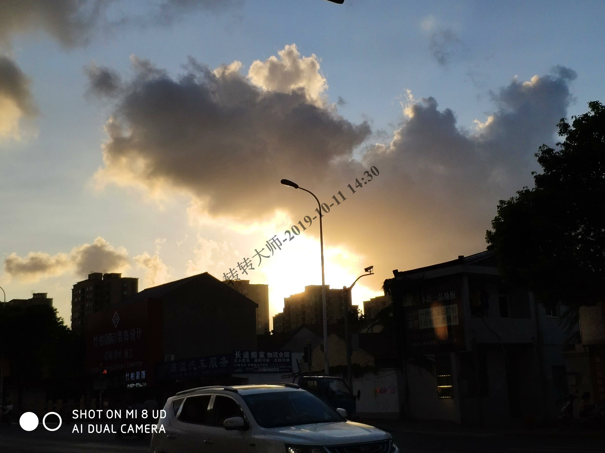
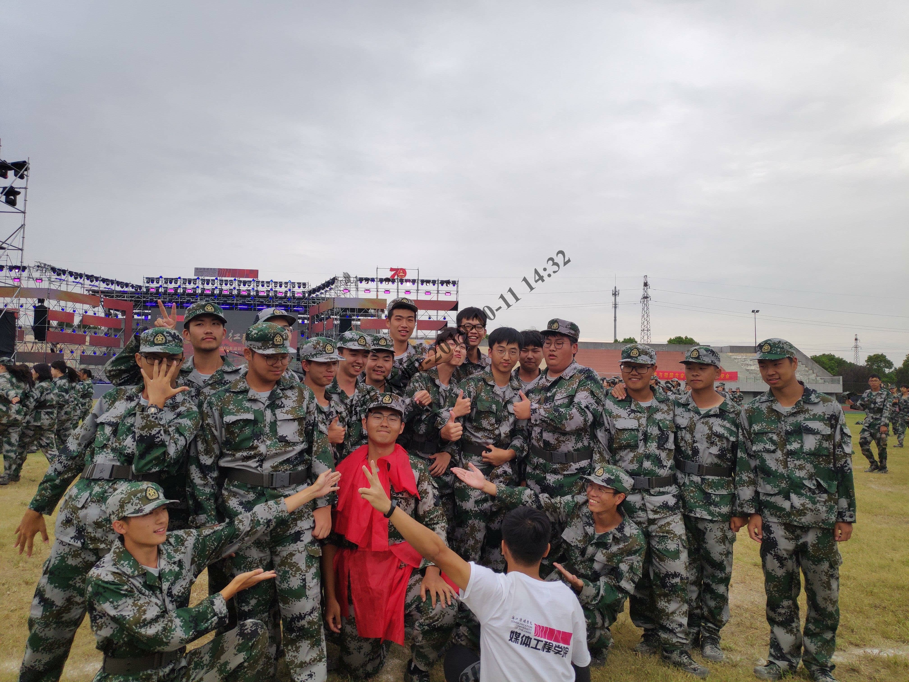
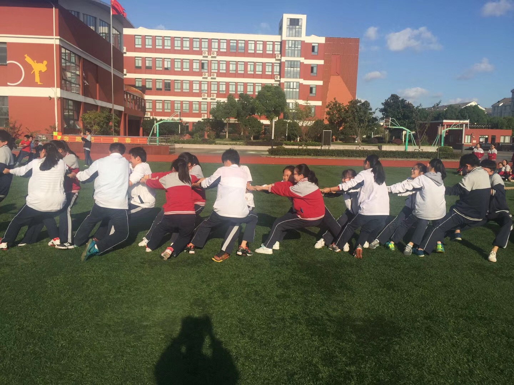
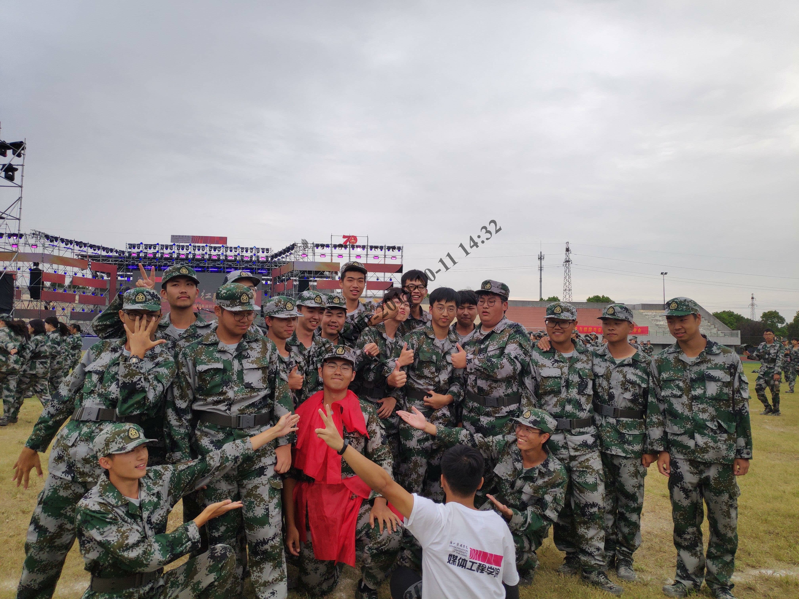
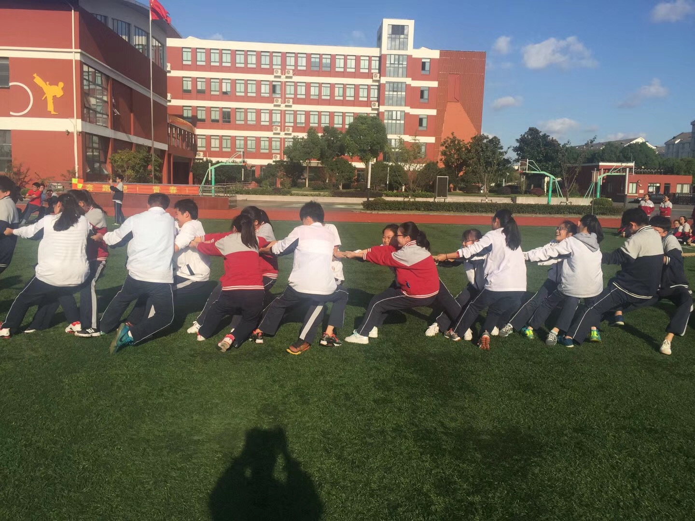
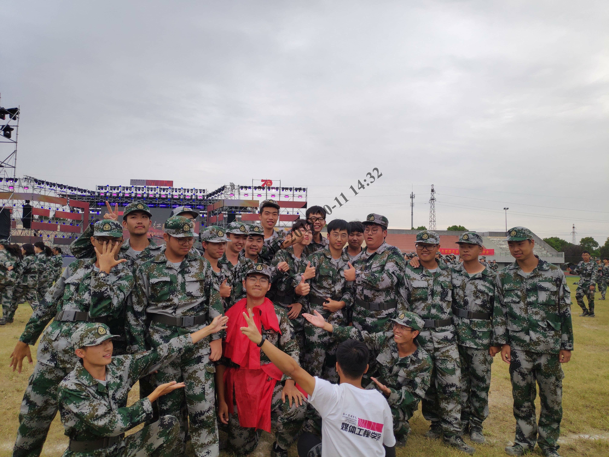
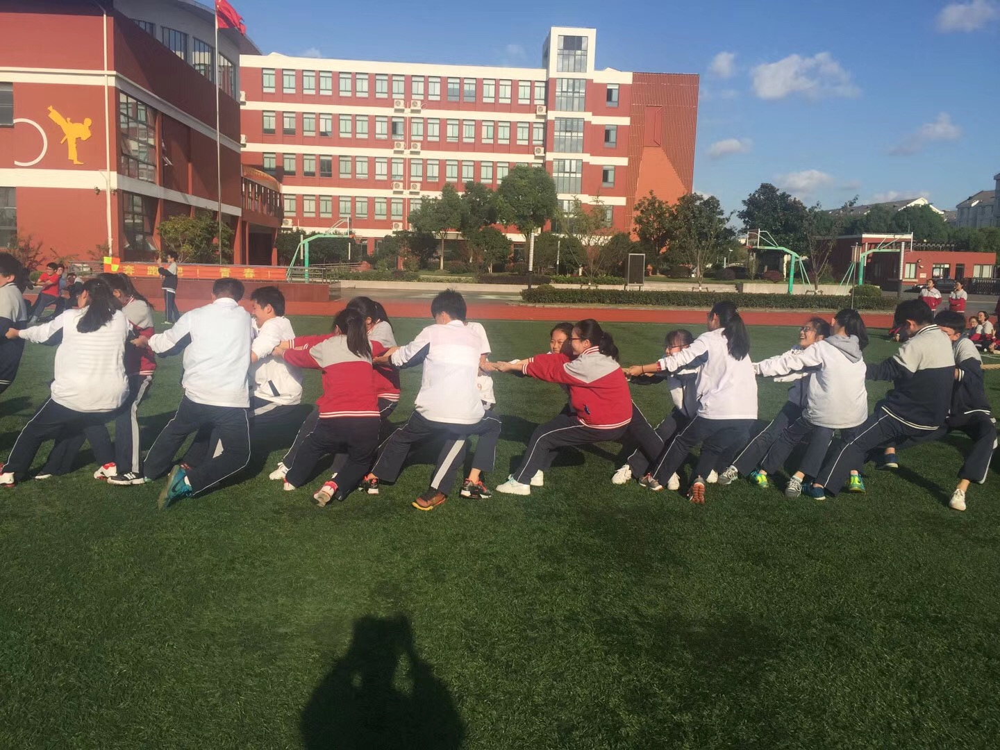

现在的时间是2222年13月32日
基本信息
点我打开"关于我"的信息
院系：媒体工程学院
软件工程系2班
学号：190808221
姓名：陈徐昕
籍贯：上海
兴趣爱好：纸片人、运动
点我打开"关于我"的信息
院系：媒体工程学院
软件工程系2班
学号：190808221
姓名：陈徐昕
籍贯：上海
兴趣爱好：纸片人、运动
关于我
点我打开"关于我"的信息
出生地：上海浦东
出生年月：2001年1月
本科就读：浙江传媒学院
专业：软件工程
性格：温顺
喜欢的事情：代码（awa）
讨厌的事情：被戳
点我打开"关于我"的信息
出生地：上海浦东
出生年月：2001年1月
本科就读：浙江传媒学院
专业：软件工程
性格：温顺
喜欢的事情：代码（awa）
讨厌的事情：被戳
日志
点我打开我的"日志"
日志：
历经高中三年魔鬼一般的训练，终于进入了大学的殿堂。如今，进入浙江传媒学院已经有了近一个月左右的时间，在这一个月的时光中，我结实到了许多好朋友，学习到了许多新的知识，也发现原来世界是那么的辽阔，以及之前的自己是多么的愚昧无知、自以为是。我始终执着地相信，美好的人生，就在不遥远的路上
。最美的风景，也永远在我前行的道路上， 在行进的过程中，在一步一步身后的脚印里。每当我迈出的步子，我都想要做最好的自己，心之所向，素履以往；生如逆旅，一苇以航。
点我打开我的"日志"
日志：
历经高中三年魔鬼一般的训练，终于进入了大学的殿堂。如今，进入浙江传媒学院已经有了近一个月左右的时间，在这一个月的时光中，我结实到了许多好朋友，学习到了许多新的知识，也发现原来世界是那么的辽阔，以及之前的自己是多么的愚昧无知、自以为是。我始终执着地相信，美好的人生，就在不遥远的路上 。最美的风景，也永远在我前行的道路上， 在行进的过程中，在一步一步身后的脚印里。每当我迈出的步子，我都想要做最好的自己，心之所向，素履以往；生如逆旅，一苇以航。
作品
点我打开我的"作品"



点我打开我的"作品"

相册
点我打开我的"相册"
 



点我打开我的"相册"


联系
点我打开我的"联系方式"
联系
电话：17521218093
email:2695976620@qq.com
点我打开我的"联系方式"
联系
电话：17521218093
email:2695976620@qq.com